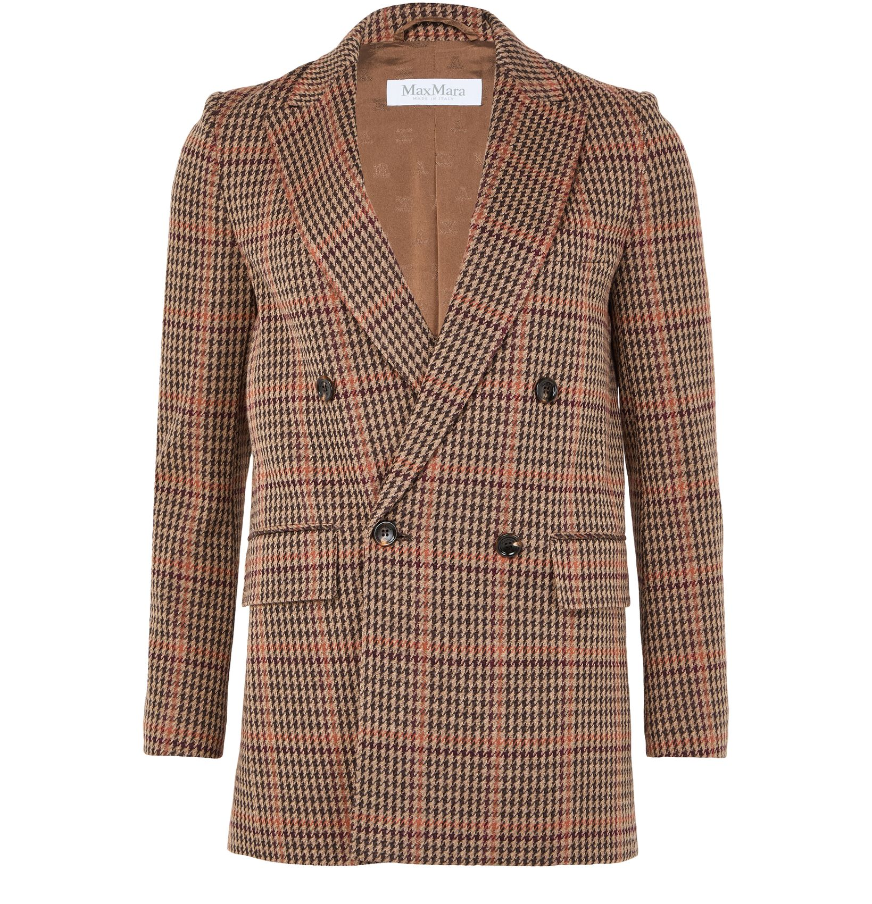
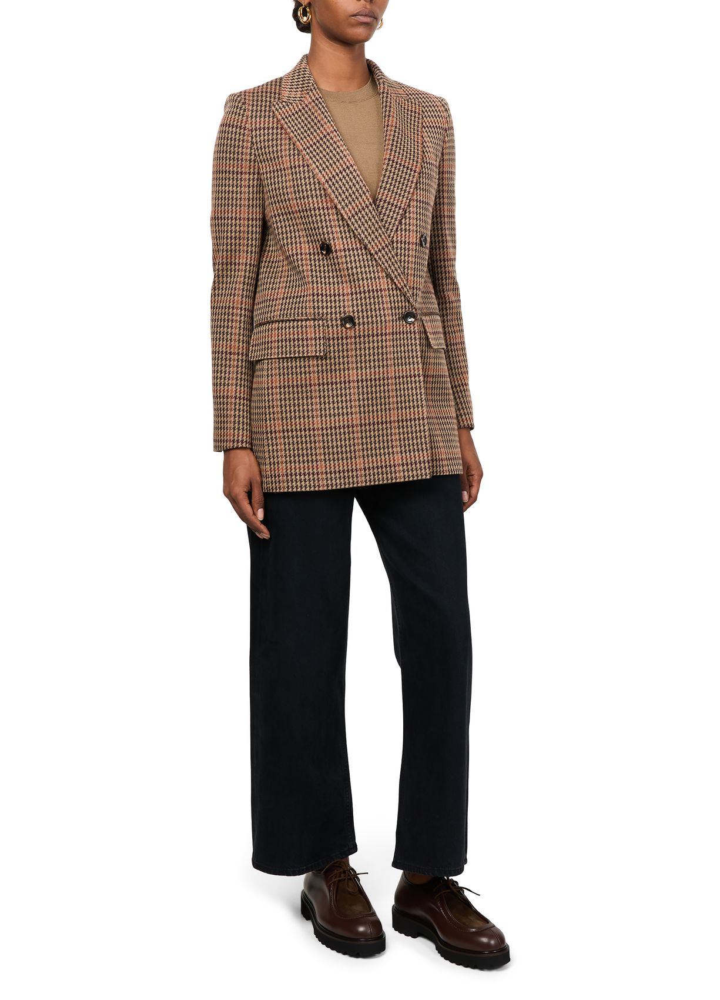
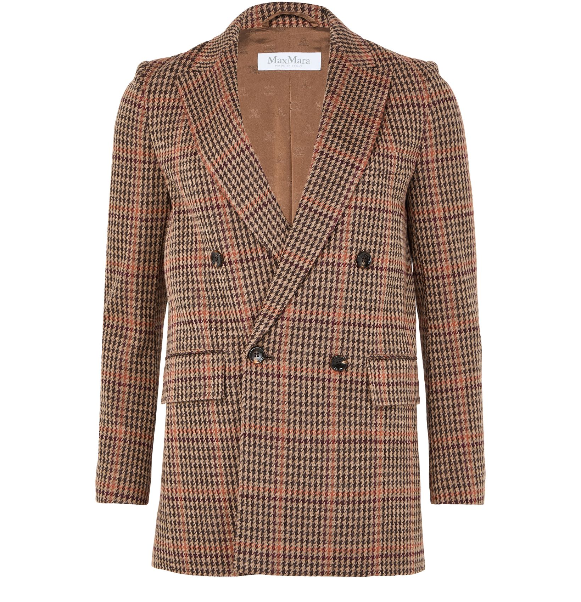
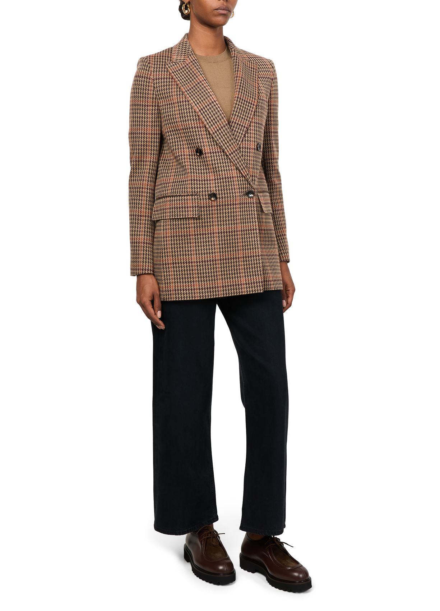

Matière / composition
L'étoffe est en 100% laine d’origine animale. La fibre est naturelle, protéique, reconnue pour ses propriétés thermorégulatrices, isolantes et respirantes. Elle apporte chaleur, résilience et confort tout en conservant une bonne tenue, adaptée aux vêtements d’extérieur structurés.
Fil
Les fils sont en laine 100 %, filés de manière régulière. Il s’agit de fils retors (au moins double retors).
Construction textile
Tissu tissé en chaine et trame.
Armure
Le tissu est réalisé en armure sergé.
Le pied-de-poule est obtenu par une alternance spécifique de fils clairs et foncés dans la chaîne et la trame, combinée au sergé, ce qui crée le motif géométrique caractéristique en forme de petits carreaux brisés.
Ennoblissement couleur
La couleur orange du fond est obtenue par teinture des fils.
La couleur orange du fond est obtenue par teinture des fils.
Ennoblissement d’apprêt
Le tissu a probablement reçu un apprêt foulonné léger, typique des lainages, afin d’assouplir la matière, d’améliorer le toucher et de renforcer la cohésion des fibres. Un léger apprêt de stabilisation est également appliqué pour limiter le feutrage et améliorer la tenue au porté.
Contexture (chaîne et trame)
La contexture est serrée, régulière et équilibrée. Les fils de chaîne et de trame sont de densité moyenne à élevée afin de garantir la netteté du motif et la solidité de l’étoffe. Cette contexture assure une bonne tenue, une opacité complète et une résistance adaptée aux usages de vestes et manteaux.
Poids
Poids : 286 g/m².
Produit fini
Tissu particulièrement adapté pour des :
- Vestes tailleur
- Blazers
Exemple de produit : blazer Guelfo de Max Mara
Voir produit
 


